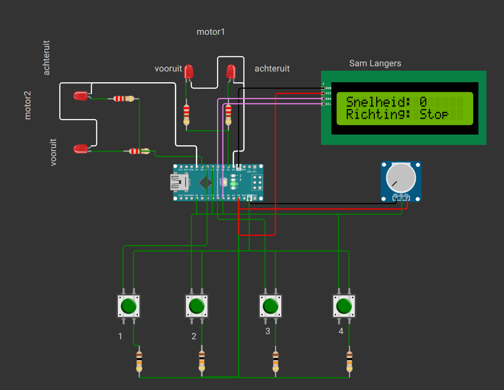

project 2 - Motorsimulatie
Simulatie van een motor met LEDs in Wokwi als voorbereiding op de zelfrijdende auto.
Beschrijving
Dit project is een motorsimulatie in Wokwi als voorbereiding op de zelfrijdende auto. Via een simulatie heb ik een motor nagebootst met behulp van LEDs om de werking te testen voor ik het in het echt bouwde. Met drukknoppen kon je de richting en snelheid van de motoren besturen, en een LCD scherm toonde de huidige snelheid en richting.
Componenten
- Wokwi simulator
- Arduino Nano
- LEDs (rood)
- Weerstanden
- Drukknoppen
- LCD scherm (I2C)
- Potentiometer